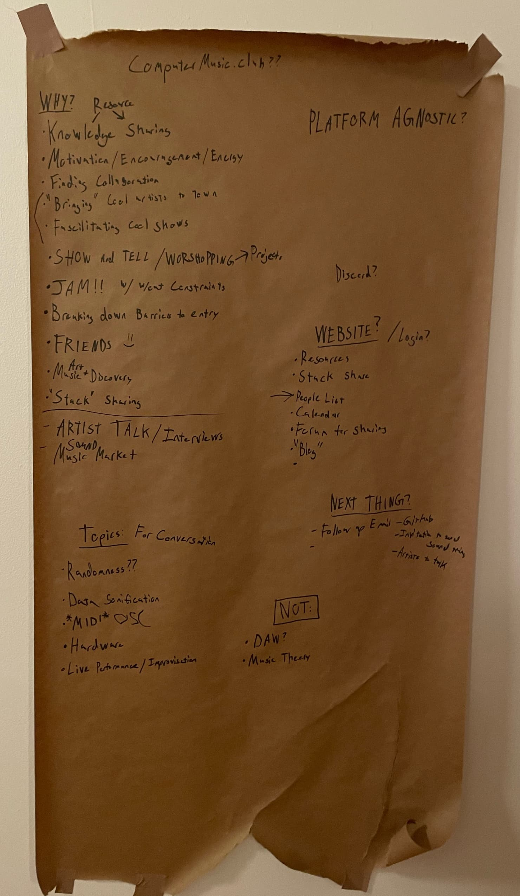
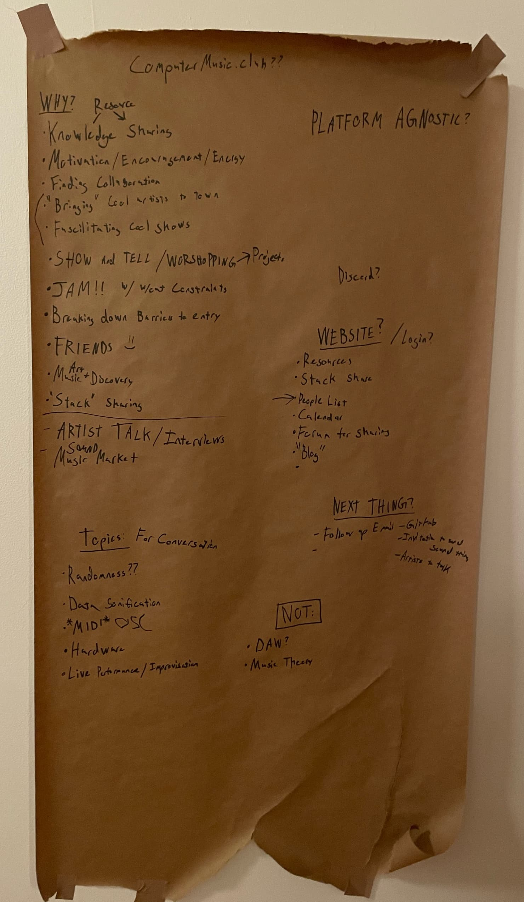

Meeting Notes
First ever meeting, Feb 11, 2023
 

WHY:
- Knowledge and resource sharing
- Motivation/Encouragement/Energy
- Finding Collaborators/Collaboration
- "Bringing" cool artists to town (literally or non-literally)
- Facilitating performances that wouldn't happen otherwise
- show and tell >> workshops >> group/individual projects & creative prompts
- Jamming with and without creative constraints
- Breaking down barriers to entry [into computer music]
- Making Friends! :)
Topics for future discussion:
- "Randomness"
- Data Sonification
- MIDI / OSC
- Hardware
- Live performance
- Improvisation
What is computermusic.club NOT:
- a place to define computermusic™ :)
- We will never prescribe to a single platform, tool, or methodology. All computermusic™ is cool!
- We probably won't focus too much on introductory type workshops, though there is always the potential
to have "spinoff" events if someone wants to make that happen
Attendees
If you were at this meeting and you'd like to share your work, add your name and link to whatever work you'd like
to
share here (either via github PR or by emailing
computermusicclub@aol.com):
Next meeting? TBD :)